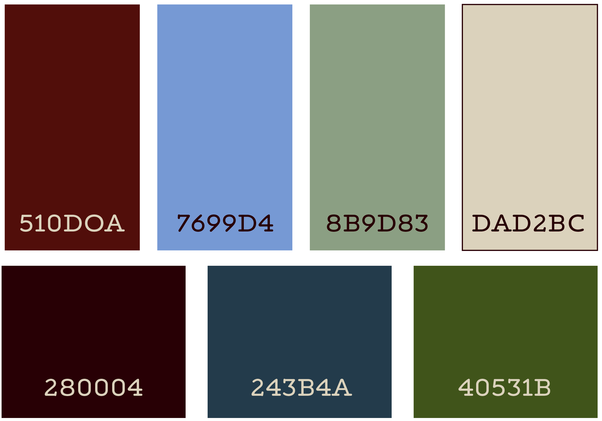

There are 7 colors used by Boswell's branding. This includes a dark red, blue, and green; a light red, blue, and green; and a beige color. Dark red should be used in the place of black, and beige should be used in the place of white. These colors are simple, earthy jewel tones that are not too loud and have a generally inviting tone to them. Prior to the rebrand, Bowsell Books did not have a set color palette, rather used new colors with each new publication. Limiting the colors is one of the most important part of the rebrand. There is still a relatively large amount of color options, with the same inviting, autumnal hue to them, so as not to stray too far from Boswell's beloved branding style. However, limiting the amount of colors used is important to creating a recognizable image for Boswell Books.